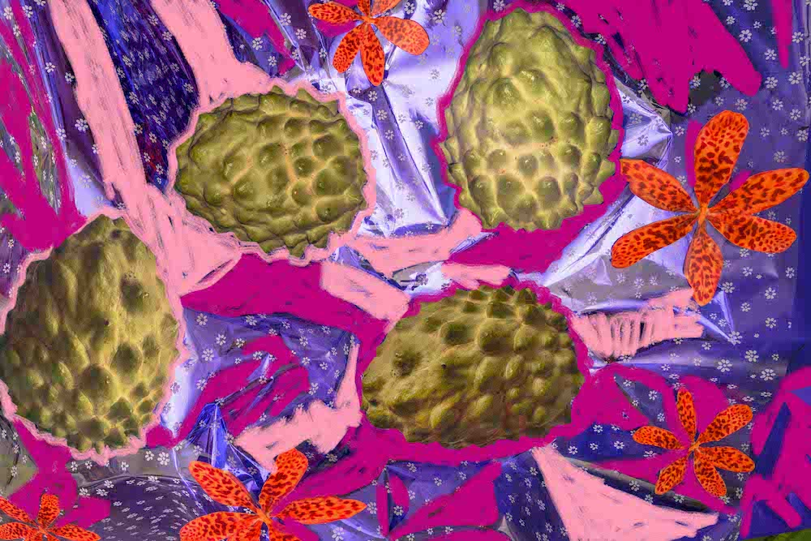
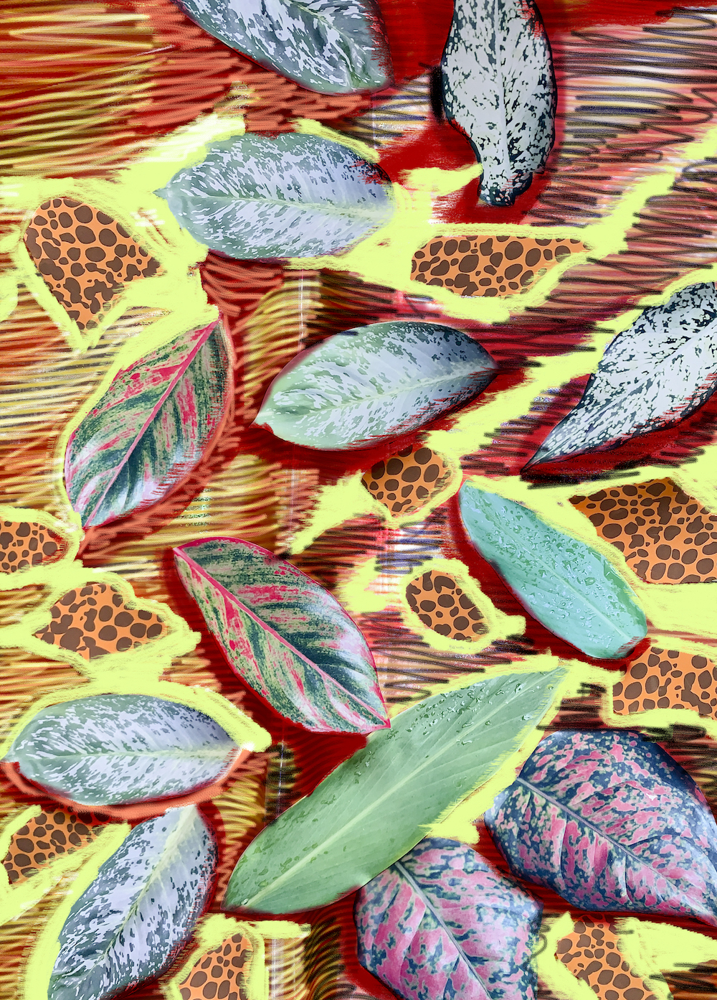
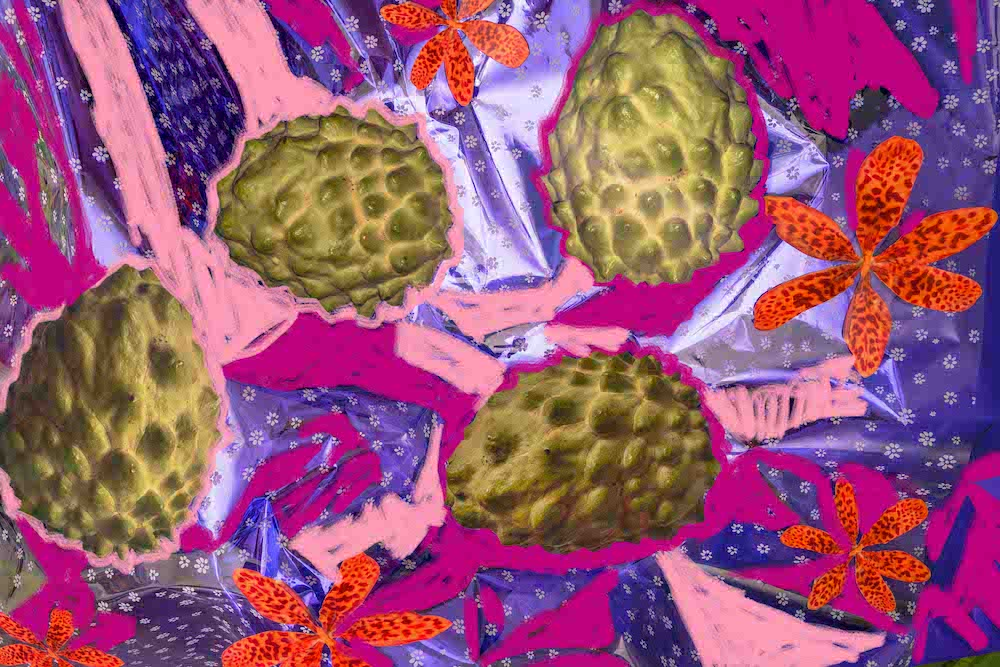
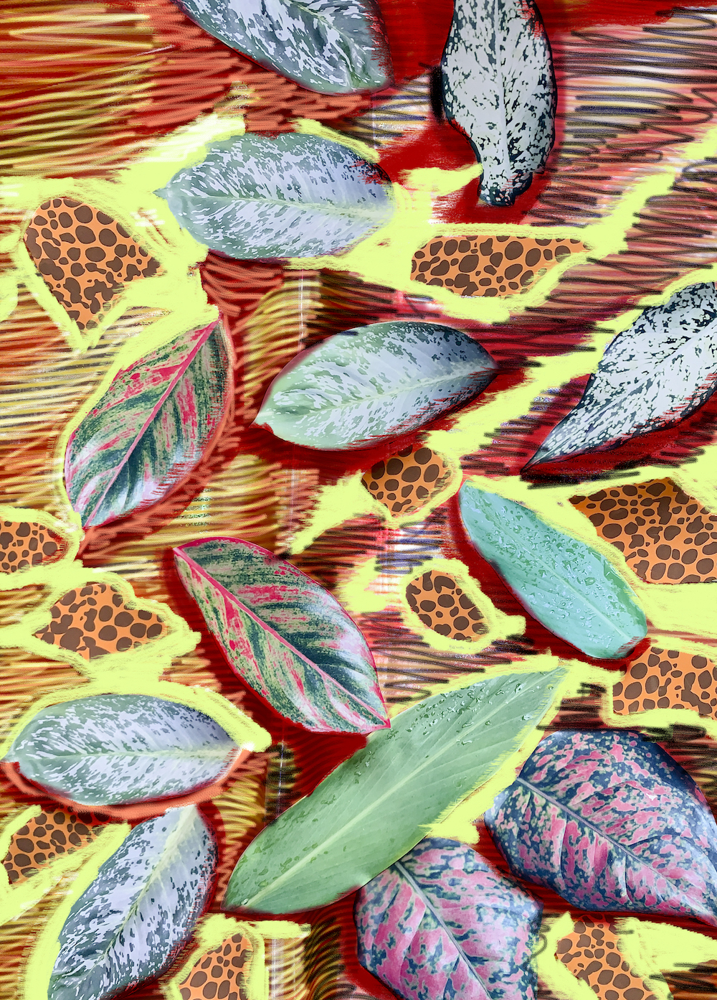

潘朵拉的盒子, 2022
"潘朵拉的盒子" 重新探索影像對她的意義，在真實世界裡完全的遊走在影像場景的真實與虛擬邊界，
反覆顛倒運用客體與主體的關係，再將影像改變成不同媒材與形狀為目的。
Pandora's box, 2022
Pandora's Box reconsiders Wu MeiChi's relationship to photographic images,
where she challenges the relationship between the subject and the object.
Navigating the boundaries between the real and the virtual world, Wu
expands on the possibility of image-making to take on different shapes
and forms across various media.
Story 1.
半睡半醒中，從房間的窗戶望出去，看到後院圍牆上的草莓梨不停的冒出來，
白色的花到結成發亮的果實，只是一個瞬間，它們的數量在牆面上排的剛好，不多不少，
接著每一顆果實又化成花又再生長一次。
我趕緊下床跑到圍牆邊，空氣的流動散發著一股果香，心急的我摘下一顆果皮紅著透綠的果實， 隨後它變成一顆黑色影子即刻在我手心上消失，而牆面上的果實也逐一褪黑去。手心上還留有果香， 為了看到更多的水果，我在後院蓋了不同高低的圍牆，每晚期待著神秘果實的生長。儘管是不能採摘的， 我還是期待著。
Half asleep and heavy-eyed, I looked out the window and saw the flourishing strawberry pears on the backyard wall. The white blossoms will soon turn into ripe fruit. They lined up perfectly along the wall, not too many and not too little. The fruit will then return to its flower form, and grow again.
I rushed out of bed and ran to the wall, the smell of fruit travelled in the air. I impatiently plucked a red-green fruit, it then instantly turned into a dark shadow and immediately vanished from my palm, while the fruits on the wall faded to black one by one. With the scent of the fruit lingering in my hand, I built walls of varying heights in my backyard to see more. I looked forward to seeing the mysterious fruit grow every night, even if I couldn't pick them.
我趕緊下床跑到圍牆邊，空氣的流動散發著一股果香，心急的我摘下一顆果皮紅著透綠的果實， 隨後它變成一顆黑色影子即刻在我手心上消失，而牆面上的果實也逐一褪黑去。手心上還留有果香， 為了看到更多的水果，我在後院蓋了不同高低的圍牆，每晚期待著神秘果實的生長。儘管是不能採摘的， 我還是期待著。
Half asleep and heavy-eyed, I looked out the window and saw the flourishing strawberry pears on the backyard wall. The white blossoms will soon turn into ripe fruit. They lined up perfectly along the wall, not too many and not too little. The fruit will then return to its flower form, and grow again.
I rushed out of bed and ran to the wall, the smell of fruit travelled in the air. I impatiently plucked a red-green fruit, it then instantly turned into a dark shadow and immediately vanished from my palm, while the fruits on the wall faded to black one by one. With the scent of the fruit lingering in my hand, I built walls of varying heights in my backyard to see more. I looked forward to seeing the mysterious fruit grow every night, even if I couldn't pick them.